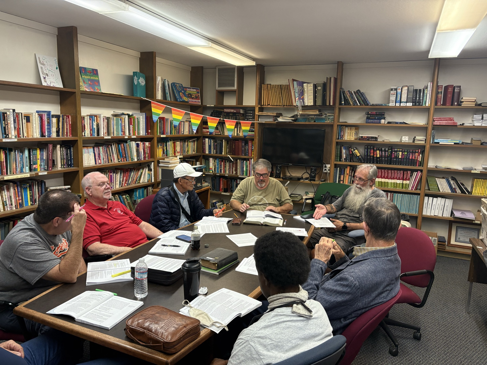
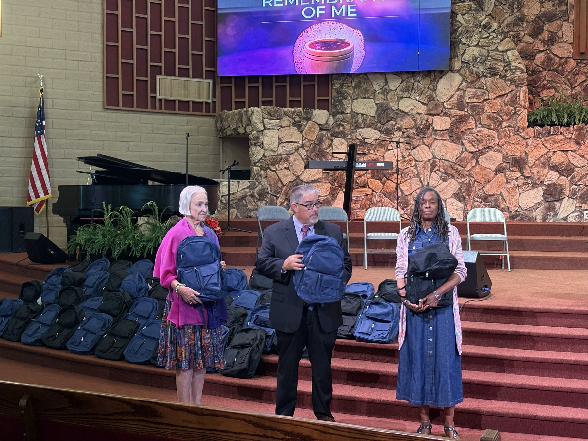

Missions & Outreach
We support missionaries serving around the world through prayer and giving, primarily through our Woman's Missionary Union (WMU).
Supporting missionaries near and far
We believe the Gospel is meant to be shared around the world. Our church supports missionaries serving internationally through our Woman's Missionary Union (WMU) — standing behind their calling through prayer and giving.
We don't currently have local service projects, food drives, or short-term mission trips, but our commitment to global missions runs deep, and every prayer and gift makes a real difference.
- • Ongoing support for missionaries serving around the world
- • Active involvement in Woman's Missionary Union (WMU)
- • Prayer and giving toward global missions work
Standing behind those who go

A few quick answers
Do you support missionaries?
Yes — through our Woman's Missionary Union (WMU), we support missionaries serving internationally through prayer and giving.
How can I get involved with WMU?
Reach out to us — WMU welcomes new members to join in praying for and giving toward missions.
Can I give directly toward missions?
Yes — ask us how to give specifically toward missionary support through WMU.
Ongoing Missionary Support
We don't currently have local service projects or short-term mission trips, but you can always join us in supporting missionaries through WMU — prayer and giving happen year-round.
Location
10720 Coloma Rd, Rancho Cordova, CA 95670
"Go therefore and make disciples of all nations, baptizing them in the name of the Father and of the Son and of the Holy Spirit."
Matthew 28:19